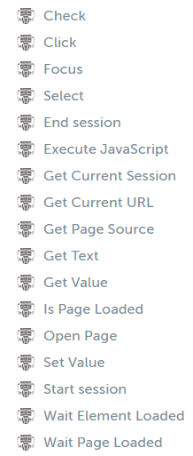
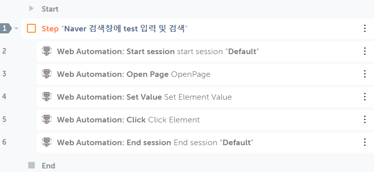
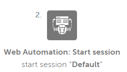
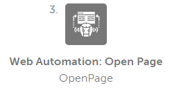
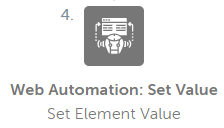
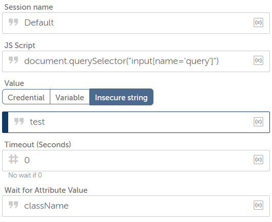
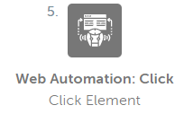
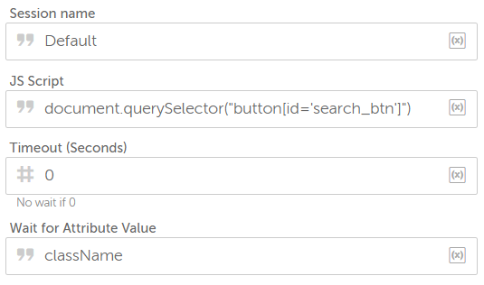
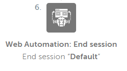

Chapter 3 Getting Started
3.1 The Package configuration

Figure.1 Web-Automation package’s Actions
- 위의 action들 중 몇 가지를 이용하여 간단한 예제를 작성할 것이다.
3.2 Example_01
3.2.1 Description
Naver 검색창에 검색어 입력 및 검색
- Session을 시작한다.
- Naver 페이지를 연다.
- 검색창에 “test”를 입력한다.
- “검색”을 클릭한다.
- Session을 종료한다.

Figure.2 Example_01 Flow
3.2.2 Flow
* 가장 먼저 Session을 연결한다.

Figure.3.1 Start Session
* URL을 <https://naver.com>으로 설정한 뒤 해당 페이지를 연다.

Figure.3.2 Open page
* 검색어 창에 "test"를 입력한다.

Figure.3.3.1 text insert
** 아래는 검색어 입력창의 CSS Selector를 사용하여 element를 찾는 javascript 코드이다.

Figure.3.3.2 JavaScript
* "검색"을 클릭한다.

Figure.3.4 Click event
** 아래는 CSS selector로 element를 찾은 뒤 click event를 유발하는 javascript 코드이다.

Figure.3.3.2 JavaScript
* Session을 종료한다.

Figure.3.5 End Session